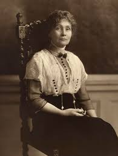
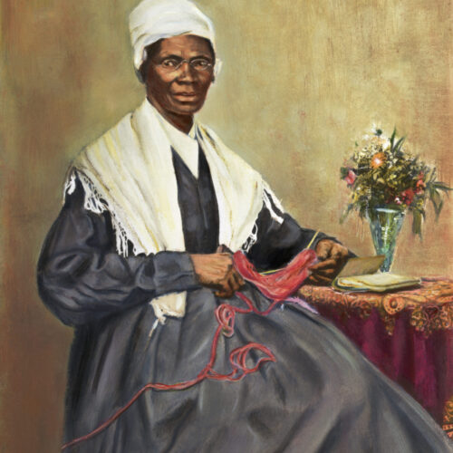

نساء ناضلن من أجل العدالة

روزا باركس
روزا باركس عانت من التمييز العنصري في أمريكا وكانت رمزًا لحركة الحقوق المدنية عندما رفضت التخلي عن مقعدها في الحافلة لرجل أبيض.
اقرأ المزيدمالالا يوسفزاي
تعرضت مالالا لمحاولة اغتيال بسبب دفاعها عن حق الفتيات في التعليم في باكستان، لكنها أصبحت رمزًا عالميًا للعدالة وحقوق المرأة.
اقرأ المزيد

إيميلين بانكهورست
قادت إيميلين حركة "السوفراجيت" في بريطانيا التي ناضلت للحصول على حق المرأة في التصويت، وتعرضت للسجن مرارًا خلال نضالها.
اقرأ المزيد

سورجورنر تروث
كانت سورجورنر عبدة محررة وأصبحت ناشطة بارزة في مجال حقوق الإنسان وحقوق المرأة، وقدمت خطابها الشهير "ألست أنا امرأة؟".
اقرأ المزيدروت بادر غينسبورغ
كانت قاضية في المحكمة العليا الأمريكية وكرست حياتها لمحاربة التمييز على أساس الجنس وضمان المساواة القانونية بين الجنسين.
اقرأ المزيدفرجينيا وولف
ناضلت فرجينيا ضد القيود المجتمعية المفروضة على النساء في وقتها وكتبت أعمالًا أدبية ناقشت فيها حقوق المرأة وحرية التعبير.
اقرأ المزيد